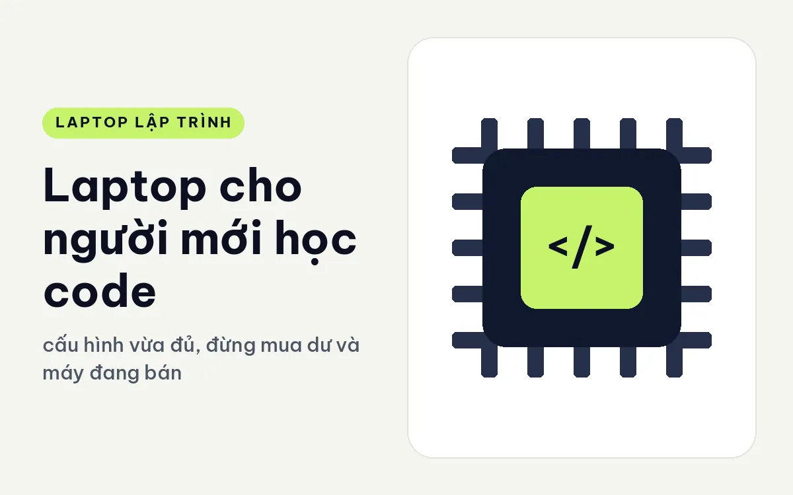
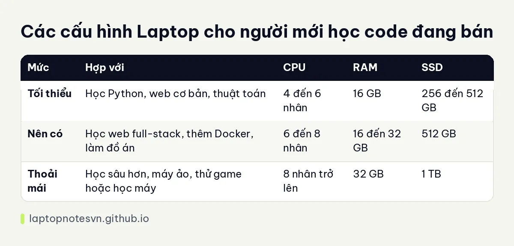

Laptop cho người mới học code - cấu hình vừa đủ, đừng mua dư và máy đang bán hợp

Người mới học code hay hỏi một câu: cần laptop mạnh cỡ nào. Câu trả lời trung thực là ít hơn bạn nghĩ. Học Python, JavaScript, C hay Java trong năm đầu đều chạy được trên một máy văn phòng vừa vừa, miễn là máy có đủ RAM và ổ SSD. Mua dư quá sớm chỉ làm bạn tốn tiền vào thứ chưa dùng đến.
Bài này nói rõ cái gì thực sự cần, cái gì chưa cần, kèm bảng cấu hình ba mức và hai máy đang bán hợp với người mới. Mọi mức bên dưới là gợi ý tham khảo, mỗi người học một hướng nên có chỗ cần điều chỉnh.
Cái gì cần, cái gì chưa cần
RAM là thứ cần trước tiên. Trình soạn code, trình duyệt mở nhiều tab tra tài liệu, video bài giảng và đôi khi một máy ảo nhỏ chạy cùng lúc. Mức 16GB là điểm khởi đầu an toàn, 8GB thì sẽ chật rất nhanh khi bạn vừa học vừa mở nhiều thứ.
SSD là thứ cần thứ hai, vì nó quyết định cảm giác máy nhanh hay chậm hằng ngày. Ổ 256GB chạy được nhưng sớm đầy, 512GB là mức hợp lý cho người học. CPU thì 4 đến 6 nhân là đủ, không cần chạy theo chip đắt nhất.
Còn thứ chưa cần là card đồ họa rời. Trừ khi bạn nhắm tới làm game, học máy hoặc dựng đồ họa ngay từ đầu, đồ họa tích hợp chạy tốt mọi bài tập lập trình cơ bản. Màn hình 15 hay 16 inch to cũng chưa cần, một màn 14 inch gọn nhẹ mang đi học, đi quán đều tiện.
Cuối cùng là bàn phím và màn hình, hai thứ bạn nhìn và chạm cả ngày. Hãy ưu tiên máy có bàn phím gõ êm, độ nảy rõ, và màn hình đủ sáng để đọc chữ nhỏ. Mỏi mắt, mỏi tay làm nản người học nhanh hơn một chiếc CPU chậm.
Cấu hình chia ba mức
| Mức | Hợp với | CPU | RAM | SSD |
|---|---|---|---|---|
| Tối thiểu | Học Python, web cơ bản, thuật toán | 4 đến 6 nhân | 16 GB | 256 đến 512 GB |
| Nên có | Học web full-stack, thêm Docker, làm đồ án | 6 đến 8 nhân | 16 đến 32 GB | 512 GB |
| Thoải mái | Học sâu hơn, máy ảo, thử game hoặc học máy | 8 nhân trở lên | 32 GB | 1 TB |
Để hiểu thêm lý do chọn các mức RAM này, bạn có thể đọc lập trình viên cần bao nhiêu RAM.

Chọn máy nào cho người mới học code
Hợp túi tiền người mới là Lenovo IdeaPad Slim 3 14 inch (2026). Máy dùng Core 5 320, RAM DDR5 16GB, SSD 512GB, nặng khoảng 1,43 kg, pin 60Wh. Máy có hai cổng USB-A, một USB-C hỗ trợ sạc và xuất hình, HDMI và khe thẻ SD, đủ cắm chuột, USB bài tập, máy chiếu. Hai khe M.2 giúp bạn gắn thêm ổ khi cần. Độ nảy phím khoảng 1,3 mm, gõ khá thoải mái.
Nếu bạn muốn một máy bền hơn, gõ êm hơn và dùng được sau khi đi làm, hãy xem HP ProBook 4 G2i 14 AI (2026). Máy dùng Core Ultra 5 325, RAM DDR5 16GB, màn FHD+ cảm ứng, có hai cổng USB-C 20Gbps, hai cổng USB-A và HDMI 2.1. Máy có TPM 2.0, cảm biến vân tay và bàn phím chống tràn. Tính năng chống tràn khá hữu ích với người hay mang đồ uống ra bàn học.
Học gì thì máy nào đủ
Học Python, C hay thuật toán là nhóm nhẹ nhất. Một IDE đơn giản và cửa sổ dòng lệnh chiếm rất ít tài nguyên, đến cả máy cấu hình thấp cũng chạy được, nên chuyện cấu hình hầu như không phải trở ngại.
Học web từ HTML, CSS tới JavaScript và framework như React cũng không nặng, nhưng trình duyệt mở nhiều tab cùng công cụ lập trình sẽ ngốn RAM. Đây là lý do 16GB được khuyên làm mức tối thiểu. Khi bắt đầu dùng Docker hay cơ sở dữ liệu cục bộ, bạn mới cần nghĩ tới 32GB.
Học làm game, học máy hoặc dựng đồ họa là nhóm nặng hơn, và chỉ khi chắc chắn theo hướng đó bạn mới nên mua máy có card rời. Với người còn đang thử nhiều hướng, tốt hơn là mua máy phổ thông bền, rồi nâng cấp hoặc đổi sang máy khác khi đã xác định rõ con đường mình đi.
Lưu ý khi mua và dùng
- Đừng mua theo nhãn trí tuệ nhân tạo hay số nhân trên bao bì, hãy nhìn RAM, SSD và bàn phím trước.
- Chọn máy còn khe nâng cấp RAM hoặc SSD nếu có thể, vì nhu cầu sẽ tăng sau một hai năm.
- Cài thêm Linux qua WSL2 để làm quen dòng lệnh, nhiều khóa học lập trình đều cần kỹ năng này.
- Sao lưu bài tập lên GitHub từ đầu, thói quen này cứu bạn khi máy hỏng hoặc mất.
- Giữ màn hình sạch và đặt máy cao ngang tầm mắt, ngồi học lâu sẽ đỡ mỏi cổ.
Khi chuyển sang giai đoạn học nghiêm túc hơn, đặc biệt là sinh viên ngành công nghệ, bạn có thể đọc thêm bài laptop cho sinh viên công nghệ thông tin để biết cách chọn máy dùng đủ bốn năm đại học.
Đăng ngày 09/11/2026